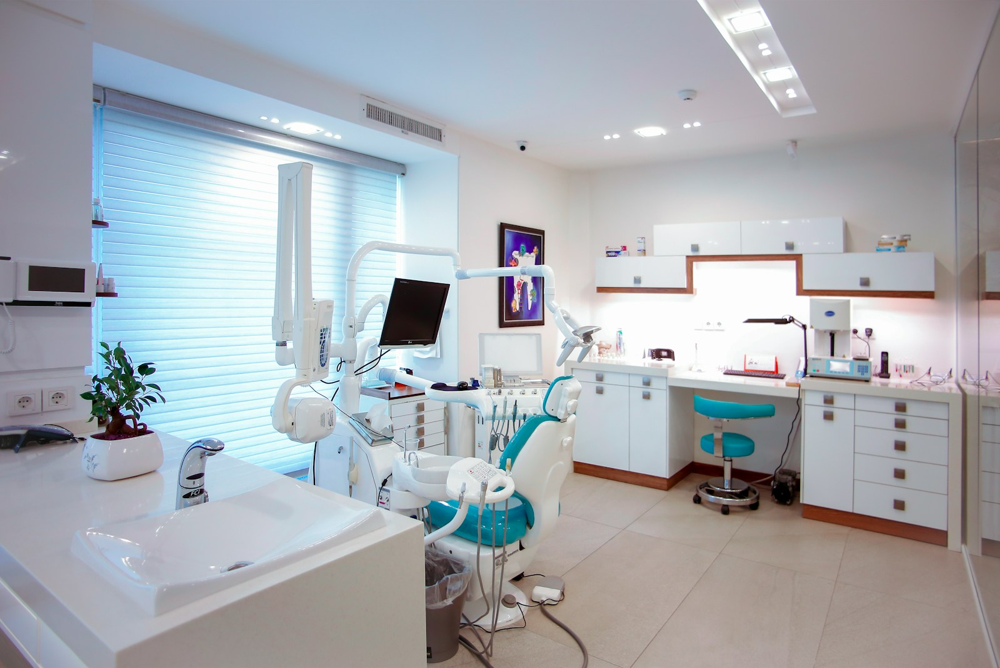
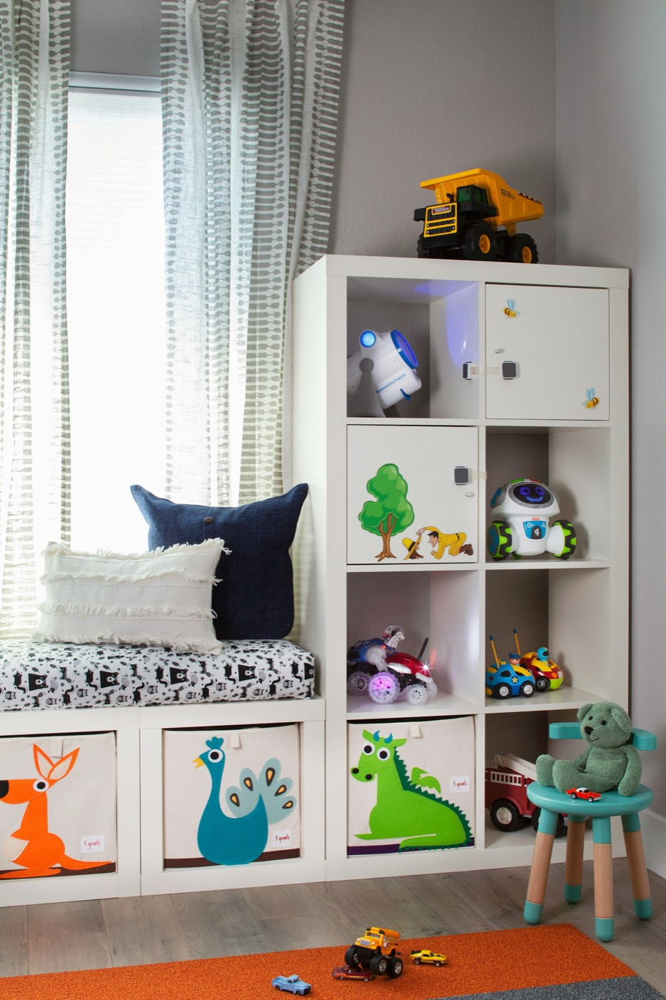
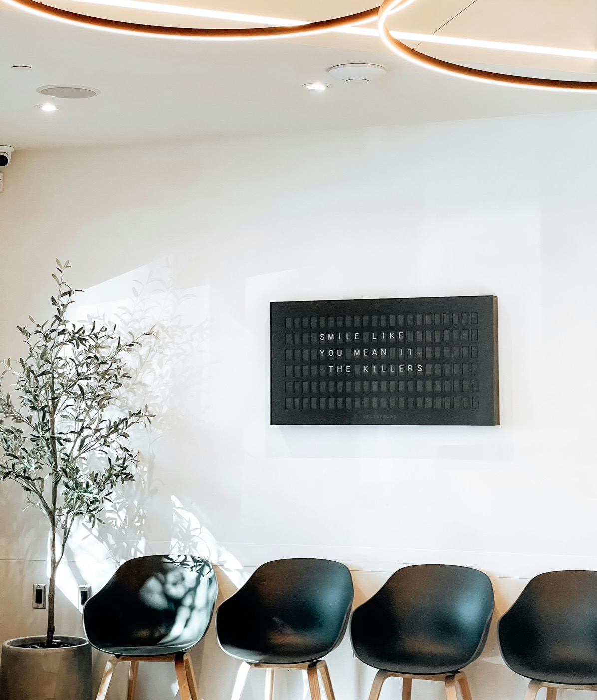
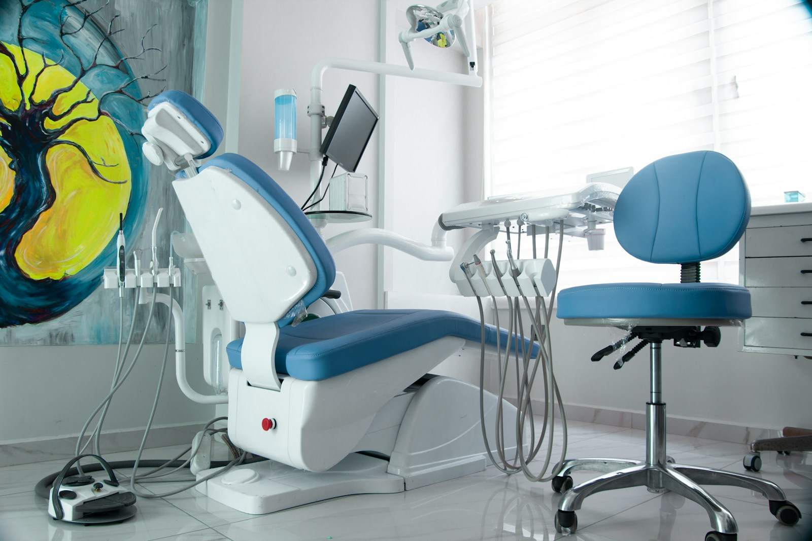
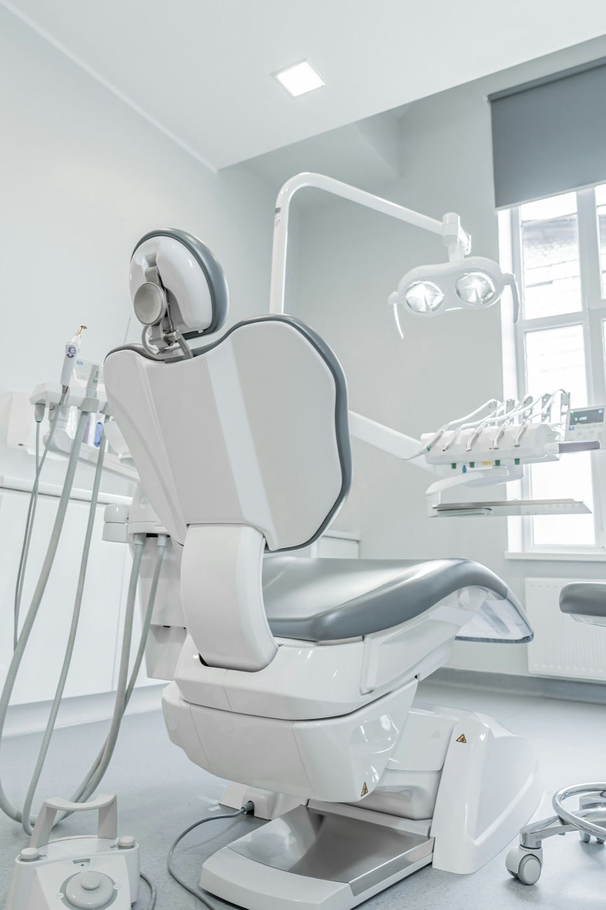
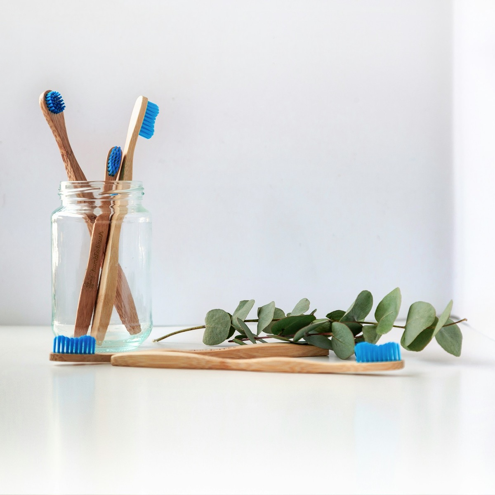

土曜も診ています。
お子さんの歯も、ご自分の歯も。
みなみ台駅から歩いて3分。待合にキッズスペースがあり、お子さん連れでもご自分の治療を受けられます。Web予約は24時間受付。

本日の診療
確認中9:30–13:00 ／ 14:30–19:00
診療時間
平日は19時まで。土曜は午後5時まで診ています。
| 時間帯 | 月 | 火 | 水 | 木 | 金 | 土 | 日祝 |
|---|---|---|---|---|---|---|---|
| 午前9:30–13:00 | 診療 | 診療 | 診療 | 休 | 診療 | 9:00 –13:00 | 休 |
| 午後14:30–19:00 | 診療 | 診療 | 診療 | 休 | 診療 | 14:00 –17:00 | 休 |
休診日は木曜・日曜・祝日です。最終受付は診療終了の30分前。急な痛みや腫れは、予約がなくてもお電話ください。
はじめての方へ
初診の日は、いきなり削ることはしません。お口の中を見て、写真と一緒に説明してから、治療の順番を決めます。
予約をとる
Web予約なら24時間、空いている時間をその場で選べます。お電話は診療時間内に受け付けています。
見本のため、このページの予約ボタンは予約画面につながりません。
問診票を書く
気になるところ、飲んでいるお薬、治療の希望を書いていただきます。予約後に届くメールから、来院前に入力もできます。
お話をうかがう
個室で、歯科医師が困っていることを直接うかがいます。「できるだけ削りたくない」「通える回数が少ない」といったご希望もこの時に。
検査と説明
レントゲンとお口の写真を撮り、画面で見ながら説明します。治療の方法が複数あるときは、保険と自費の違いも含めてお伝えします。
治療を始める
痛みが強い場合は、その日のうちに応急の処置をします。2回目以降の予約は、お帰りの際に受付でとれます。
保険証（マイナ保険証も使えます）、お薬手帳、お子さんは医療証。初診はおよそ60分です。
自費診療の料金
保険がきかない治療の標準的な費用です。お口の状態によって変わるため、検査のあとに見積書をお渡しし、ご納得いただいてから始めます。
| 治療 | 標準的な費用（税込） | 期間・回数 | 主なリスク・副作用 |
|---|---|---|---|
| インプラント1本・被せ物まで | 385,000円〜骨を足す処置は別途 | 3〜6か月 通院5〜8回 |
手術後に腫れ・痛み・内出血が出ることがあります。骨の量によっては骨を足す処置が必要です。糖尿病や喫煙は治りに影響します。手入れが不十分だと周りの歯ぐきに炎症（インプラント周囲炎）が起きることがあります。 |
| セラミック被せ物 1本 | 132,000円詰め物は 66,000円 | 2〜4週間 通院2〜3回 |
歯を削る必要があります。強くかみしめる癖があると割れることがあります。治療後しばらく、しみることがあります。 |
| マウスピース矯正全体の歯並び | 880,000円〜前歯だけは 330,000円〜 | 1年〜2年半 1〜3か月に1回通院 |
1日20時間以上つけないと計画どおりに動きません。歯が動くときに痛みや違和感が出ます。歯の根が短くなる、歯ぐきが下がることがあります。治療後は保定装置をつけないと後戻りします。 |
| ホワイトニング医院で行う／ご自宅で行う | 22,000円医院で1回（上下）33,000円ご自宅用（マウスピースと薬剤2週間分） | 医院 1〜3回 ご自宅 2週間〜 |
一時的にしみることがあります。白くなり方には個人差があり、時間とともに色は戻ります。詰め物や被せ物は白くなりません。 |
- 表示の金額は、デザイン見本用の仮の価格です。
- 自費診療は公的医療保険の対象外です。医療費控除の対象になる場合があります。
- 分割払い・クレジットカードについては受付でご相談ください。
要撮影院長の写真
（診療室で・白衣）
医師・スタッフ
院長 花水 さやか歯科医師
二人の子どもを育てながら、地元のみなみ台で開院しました。歯医者が苦手なお子さんも、何年も通っていない大人の方も、まずは話を聞かせてください。治療を急がせることはしません。
- 2008年
- 〇〇大学 歯学部 卒業
- 2008年
- 〇〇大学病院 小児歯科 勤務
- 2014年
- 都内の歯科医院で副院長
- 2019年
- はなみずき歯科 開院
※人物・経歴・資格はデザイン見本用の架空のものです。
歯科衛生士 4名クリーニングと定期健診、お子さんのフッ素塗布を担当します。
受付・助手 3名予約の変更やお支払いのご相談は受付へ。
院内のようす
待合の奥にキッズスペースがあり、受付から様子が見えます。ベビーカーのまま診療室まで入れます。





アクセス
みなみ台駅 南口から
歩いて3分
駅前のロータリーを右へ。郵便局の向かい、1階の青い看板が目印です。
- 住所
- 〒000-0000 東京都〇〇区みなみ台2-14-6 1階（架空）
- 電話
- 03-0000-1234
- 休診日
- 木曜・日曜・祝日
- 駐車場
- 提携の駐車場があります（1時間分サービス）